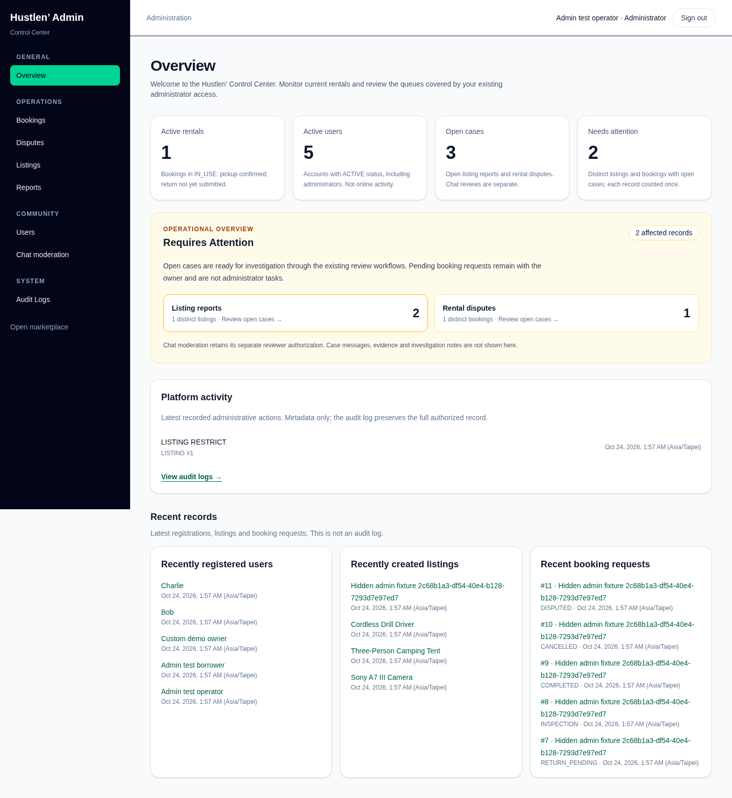
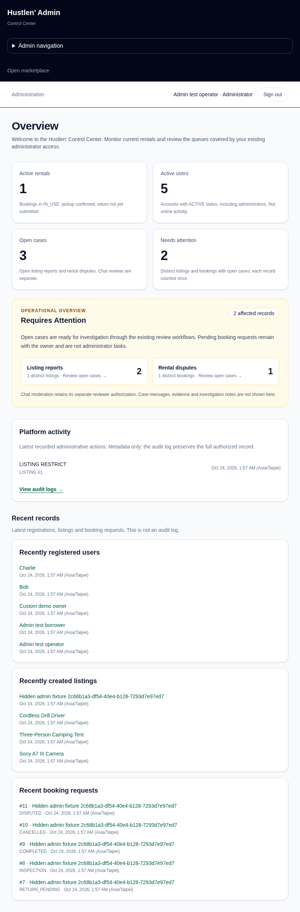
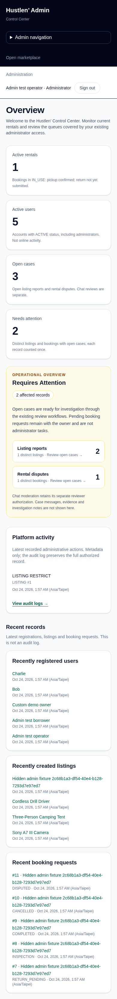
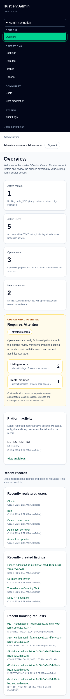

Baseline implementation: 98d24a918be7ce391c201cfd1822eb6ed84bbc36. These committed full-page Chromium captures contain synthetic fixtures only. They are unchanged from Batch 1; viewport dimensions describe the browser, not the full image height.



